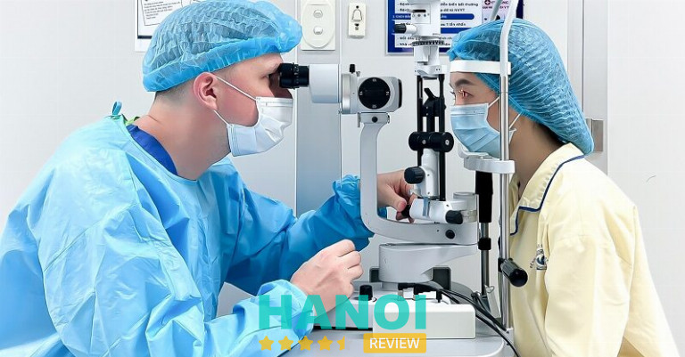
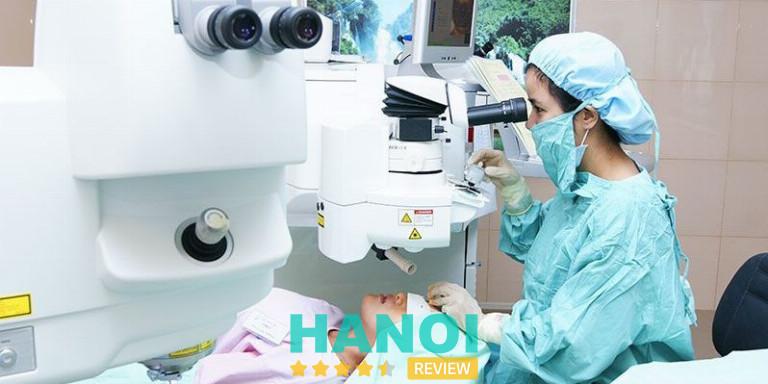
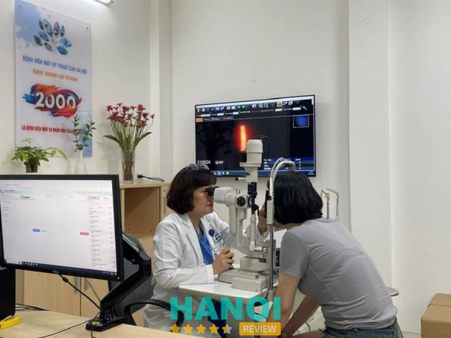
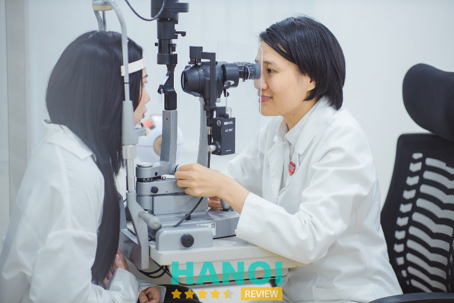
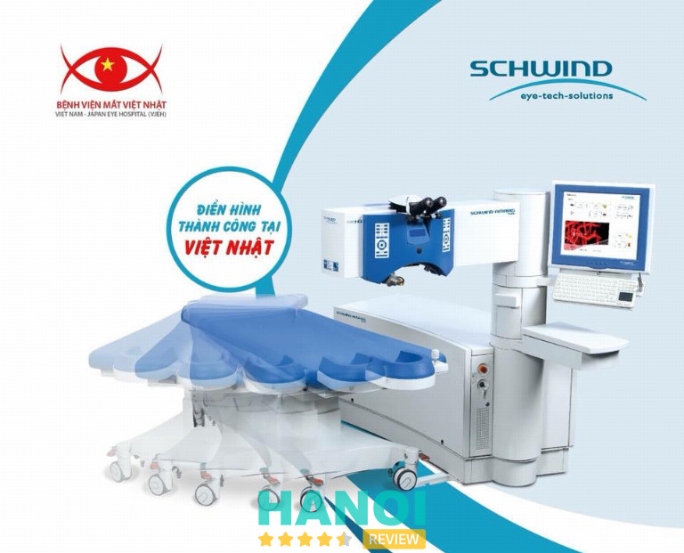
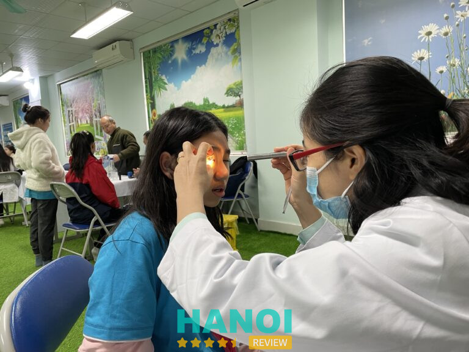
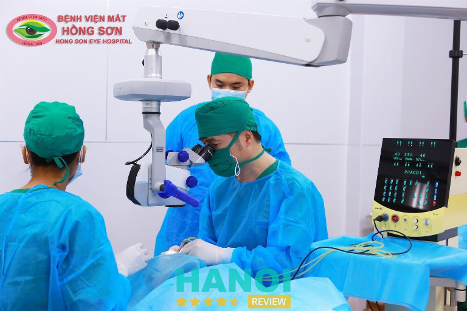
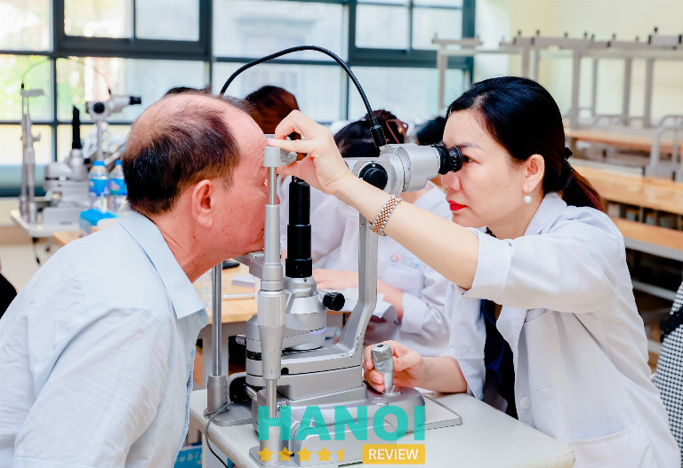

10 Địa chỉ mổ cận tại Hà Nội uy tín, an toàn, bác sĩ giỏi
Nhu cầu tìm kiếm địa chỉ mổ cận tại Hà Nội ngày càng tăng. Tuy nhiên, không phải cơ sở nào cũng đảm bảo chất lượng và an toàn. Dù quy trình phẫu thuật cận thị diễn ra nhanh chóng, yêu cầu về tay nghề bác sĩ và trang thiết bị rất khắt khe. Lựa chọn đúng địa chỉ không chỉ cải thiện thị lực mà còn mang lại sự an tâm cho sức khỏe đôi mắt.
Top 10 Địa chỉ mổ cận tại Hà Nội uy tín, bác sĩ giỏi
Với sự gia tăng nhu cầu học tập và làm việc trên máy tính, nhiều người gặp phải tình trạng cận thị do tiếp xúc quá nhiều với ánh sáng xanh. Để đáp ứng nhu cầu cải thiện thị lực, nhiều địa chỉ mổ cận tại Hà Nội đã ra đời, cung cấp các dịch vụ chất lượng. Nếu bạn vẫn chưa tìm được địa chỉ phù hợp, hãy tham khảo ngay bài viết dưới đây để có thêm gợi ý đáng tin cậy.
Bệnh viện Mắt Quốc tế Việt – Nga
Bệnh viện Mắt Quốc tế Việt – Nga nổi tiếng trong lĩnh vực y tế bằng sự hợp tác giữa Việt Nam và Liên bang Nga. Nơi đây đã nhanh chóng trở thành một trong những địa chỉ hàng đầu cho phẫu thuật cận thị tại Hà Nội, được nhiều bệnh nhân tin tưởng và lựa chọn.
Bệnh viện được trang bị hệ thống thiết bị tiên tiến, hiện đại để phục vụ cho việc kiểm tra và phẫu thuật mắt. Các máy móc tại đây đều được nhập khẩu từ những nhà cung cấp uy tín và trải qua kiểm định chất lượng nghiêm ngặt, nhằm đảm bảo an toàn và hiệu quả trong từng ca phẫu thuật.
Đội ngũ bác sĩ tại Bệnh viện Mắt Quốc tế Việt – Nga gồm những chuyên gia hàng đầu trong ngành nhãn khoa. Bệnh viện không chỉ có những bác sĩ có trình độ chuyên môn cao ở Việt Nam, mà còn có sự tham gia của các chuyên gia từ Liên bang Nga trong việc khám và điều trị, đảm bảo mang đến cho bệnh nhân những dịch vụ y tế tốt nhất.

Một điểm nổi bật tại Bệnh viện là phương pháp xóa cận Relex Smile. Phương pháp tiên tiến này giúp bệnh nhân không còn phải lo lắng về việc đeo kính cận dày, trong khi vẫn có thể nhìn thấy mọi thứ rõ ràng. Nhiều khách hàng đã trải nghiệm phương pháp này và đều rất hài lòng với kết quả.
Bệnh viện Mắt Quốc tế Việt – Nga còn tự hào là đơn vị độc quyền sử dụng máy MEL90, kết hợp với CRS Master và phần mềm điều trị hiện đại. Công nghệ này giúp giảm thiểu hiện tượng chói sáng hay lóa sáng sau phẫu thuật, mang lại cho bệnh nhân trải nghiệm thoải mái nhất.
Với những trang thiết bị hiện đại, đội ngũ bác sĩ chuyên môn cao và phương pháp điều trị tiên tiến, Bệnh viện Mắt Quốc tế Việt – Nga thực sự là một lựa chọn hoàn hảo cho những ai mong muốn tìm kiếm giải pháp điều trị cận thị an toàn và hiệu quả tại Hà Nội.
Thông tin liên hệ:
- Địa chỉ: Nhà C2 Đường A 3, P. Dịch Vọng, Q. Cầu Giấy, Hà Nội
- Điện thoại: 0243 755 8688
- Website: hcm.matvietnga.com
- Fanpage: FB.com/benhvienmatquoctevietnga
Xem thêm: 5 Bệnh viện có dịch vụ chuyên khoa Mắt tại Hà Nội tốt nhất
Bệnh viện mắt quốc tế Nhật Bản
Bệnh viện Mắt Quốc tế Nhật Bản tại Hà Nội là một trong những địa chỉ uy tín nhất trong lĩnh vực phẫu thuật điều trị cận thị. Được trang bị các công nghệ hiện đại và tiên tiến, bệnh viện luôn mang đến các giải pháp điều trị an toàn, hiệu quả cao cho bệnh nhân.
Các phương pháp phẫu thuật tại đây rất đa dạng, từ Phakic, ReLEx SMILE đến Femtosecond Lasik và SBK Lasik, đáp ứng nhu cầu riêng của từng người. Điều này mang lại sự linh hoạt trong lựa chọn, giúp bệnh nhân cảm thấy yên tâm hơn khi tìm đến bệnh viện.
Hệ thống trang thiết bị tại bệnh viện là một trong những yếu tố quan trọng tạo nên sự vượt trội. Với những thiết bị hiện đại như Visumax và Mel90 từ Carl Zeiss (Đức), bệnh viện đảm bảo sự chính xác và an toàn tối ưu trong quá trình phẫu thuật khúc xạ cho bệnh nhân.
Dịch vụ chăm sóc tại bệnh viện cũng rất toàn diện, từ việc hỗ trợ 1:1 đến việc tư vấn chi tiết và tận tình. Điều dưỡng riêng luôn đồng hành cùng bệnh nhân, đảm bảo mọi thắc mắc được giải đáp một cách rõ ràng và đầy đủ, giúp họ hoàn toàn an tâm.
Với sự kết hợp giữa trang thiết bị hiện đại, đội ngũ bác sĩ giàu kinh nghiệm và dịch vụ chăm sóc chuyên nghiệp, Bệnh viện Mắt Quốc tế Nhật Bản là lựa chọn hàng đầu cho những ai đang tìm kiếm giải pháp điều trị cận thị an toàn, hiệu quả.
Thông tin liên hệ:
- Địa chỉ: 32 Phó Đức Chính, Q. Ba Đình, Hà Nội
- Điện thoại: 0902 24 22 91
- Email: reservation@jieh.vn
- Website: jieh.vn
- Fanpage: FB.com/JIEH32PDC
Bệnh viện Mắt Quốc tế DND
Bệnh viện Mắt Quốc tế DND tại Hà Nội đã xây dựng được danh tiếng vững chắc trong lĩnh vực phẫu thuật cận thị. Với nhiều năm kinh nghiệm và chất lượng dịch vụ chuyên nghiệp, nơi đây trở thành địa chỉ đáng tin cậy cho những ai muốn cải thiện thị lực một cách an toàn và hiệu quả.
Các bác sĩ tại bệnh viện là những chuyên gia giàu kinh nghiệm, với hơn 30 năm trong nghề, luôn mang đến sự an tâm cho bệnh nhân. Quy trình khám và điều trị tại đây được thực hiện tỉ mỉ, từ khâu tư vấn ban đầu đến phẫu thuật, đảm bảo mang lại kết quả tối ưu cho người bệnh.
Mỗi năm, có rất nhiều ca phẫu thuật thành công được thực hiện, đặc biệt là với phương pháp Lasik. Đây là công nghệ đã được áp dụng trên toàn thế giới, giúp điều chỉnh khúc xạ một cách chính xác và an toàn. Kỹ thuật này tiếp tục khẳng định vị thế của bệnh viện trong ngành nhãn khoa.
Bệnh viện luôn đi đầu trong việc áp dụng các phương pháp phẫu thuật tiên tiến nhất. Phương pháp Femto Lasik, sử dụng laser hiện đại, là giải pháp hiệu quả cho những bệnh nhân có độ cận thị cao hoặc giác mạc yếu. Phương pháp SmartSurface cũng mang lại nhiều lợi ích khi có khả năng tái tạo bề mặt giác mạc mà không gây tổn thương.
Trang thiết bị y tế tại Bệnh viện Mắt Quốc tế DND được đầu tư kỹ lưỡng, đáp ứng các tiêu chuẩn quốc tế. Nhờ sự hỗ trợ của các máy móc hiện đại, các bác sĩ có thể chẩn đoán chính xác và đề xuất phương án điều trị phù hợp nhất cho từng bệnh nhân.
Với môi trường chăm sóc chu đáo và sự tận tâm trong từng ca điều trị, Bệnh viện Mắt Quốc tế DND không ngừng khẳng định chất lượng dịch vụ của mình. Đây thực sự là nơi lý tưởng để lựa chọn khi bệnh nhân tìm kiếm một địa chỉ mổ cận uy tín và an toàn tại Hà Nội.
Thông tin liên hệ:
- Địa chỉ: Tòa nhà C2, Đường A 3, P. Dịch Vọng, Q. Cầu Giấy, Hà Nội
- Điện thoại: 0243 755 8688
- Website: hcm.matvietnga.com
- Email: info@matquocte.vn
- Fanpage: FB.com/VienMatQuocTe
Bệnh viện Mắt Trung Ương
Bệnh viện Mắt Trung Ương Hà Nội được nhiều người biết đến như một địa chỉ uy tín trong việc điều trị các vấn đề về mắt. Với nhiều năm hoạt động, bệnh viện đã trở thành trung tâm chuyên khoa mắt hàng đầu, cung cấp các dịch vụ chăm sóc mắt chất lượng cao và phương pháp điều trị tiên tiến.
Bệnh viện không ngừng cải tiến, áp dụng công nghệ hiện đại để đáp ứng nhu cầu điều trị của bnệh nhân. Trong đó, dịch vụ mổ cận thị luôn được đánh giá cao, đã giúp hàng trăm bệnh nhân cải thiện thị lực, thoát khỏi sự phụ thuộc vào kính đeo.
Đội ngũ bác sĩ tại đây sở hữu tay nghề xuất sắc và kinh nghiệm phong phú. Mỗi ca phẫu thuật đều được thực hiện với sự tận tâm và tinh thần trách nhiệm cao, đảm bảo an toàn tuyệt đối cho bệnh nhân. Quy trình tư vấn trước và sau phẫu thuật cũng được thực hiện kỹ lưỡng, giúp bệnh nhân yên tâm về kết quả điều trị.

Bệnh nhân có thể lựa chọn điều trị theo dịch vụ hoặc sử dụng bảo hiểm y tế, nhưng dù là hình thức nào, quá trình thăm khám và phẫu thuật đều tuân thủ nghiêm ngặt các tiêu chuẩn của Bộ Y tế. Điều này đảm bảo mọi người đều được tiếp cận dịch vụ tốt nhất tại bệnh viện.
Hiện tại, Bệnh viện Mắt Trung Ương cung cấp nhiều phương pháp mổ cận thị hiện đại như Lasik, FemtoLasik và Epi-LASIK, trong đó mỗi phương pháp đều được điều chỉnh phù hợp với tình trạng mắt của từng bệnh nhân.
Với sự kết hợp của đội ngũ chuyên gia giỏi và trang thiết bị tiên tiến, Bệnh viện Mắt Trung Ương tiếp tục là sự lựa chọn hàng đầu cho những ai muốn phẫu thuật cận thị an toàn và hiệu quả tại Hà Nội. Chất lượng dịch vụ và sự chăm sóc tận tình đã tạo nên niềm tin vững chắc cho hàng ngàn bệnh nhân trong nhiều năm qua.
Thông tin liên hệ:
- Địa chỉ: 85 Phố Bà Triệu, P. Nguyễn Du, Q. Hai Bà Trưng, Hà Nội
- Điện thoại: 024 3826 3966
- Website: vnio.vn
- Email: bvmtw@vnio.vn
- Fanpage: FB .com/VNIO.VN
Xem thêm: 5 Địa chỉ điều trị glôcôm tại Hà Nội uy tín, hiệu quả
Bệnh viện Mắt Kỹ Thuật Cao Hà Nội
Bệnh viện Mắt Kỹ thuật cao Hà Nội, với nhiều năm phát triển, là một trong những địa chỉ hàng đầu về phẫu thuật cận tại Hà Nội. Với cam kết mang đến dịch vụ tốt nhất, bệnh viện luôn được bệnh nhân đánh giá cao về hiệu quả và chất lượng điều trị.
Bệnh viện quy tụ đội ngũ bác sĩ chuyên nghiệp, giàu kinh nghiệm, được đào tạo tại các trung tâm y tế lớn trong và ngoài nước. Không chỉ sở hữu kiến thức sâu rộng, các bác sĩ còn liên tục cập nhật những công nghệ và kỹ thuật mổ cận hiện đại nhất, mang lại sự an toàn và hài lòng cho bệnh nhân sau mỗi ca phẫu thuật.

Trang thiết bị và máy móc tại bệnh viện luôn được chú trọng đầu tư. Tất cả đều là những thiết bị nhãn khoa tiên tiến nhất hiện nay, giúp quá trình điều trị và phẫu thuật đạt được độ chính xác cao. Điều này đảm bảo rằng mỗi bệnh nhân khi điều trị tại đây đều nhận được sự chăm sóc tốt nhất.
Chi phí phẫu thuật tại Bệnh viện Mắt Kỹ thuật cao Hà Nội được thiết kế theo các gói dịch vụ đa dạng, phù hợp với nhu cầu và tình trạng mắt của từng bệnh nhân. Các gói mổ cận như Phakic ICL, Lasik không chạm, Lasik nâng cao đều được công khai minh bạch, đảm bảo không có chi phí phát sinh bất ngờ.
Với sự kết hợp giữa đội ngũ y bác sĩ giỏi và công nghệ tiên tiến, Bệnh viện Mắt Kỹ thuật cao Hà Nội luôn là lựa chọn đáng tin cậy cho những ai mong muốn cải thiện thị lực và loại bỏ sự phụ thuộc vào kính mắt.
Thông tin liên hệ:
- Địa chỉ: 53 Trần Nhân Tông, P. Bùi Thị Xuân, Q. Hai Bà Trưng, Hà Nội
- Điện thoại: 098 412 2153
- Website: benhvienmat.vn
- Fanpage: FB.com/hethongbenhvienmathitec
Bệnh viện Mắt Sài Gòn
Bệnh viện Mắt Sài Gòn đã phát triển thành hệ thống bệnh viện nhãn khoa hàng đầu với các chi nhánh trải dài tại nhiều tỉnh thành lớn, bao gồm Hà Nội, Đà Nẵng, Nha Trang, và nhiều địa phương khác. Đây là nơi mà hàng nghìn bệnh nhân đã tìm đến để phẫu thuật cận thị an toàn, hiệu quả.
Đội ngũ bác sĩ tại đây là những chuyên gia giỏi, với kinh nghiệm phong phú và luôn cập nhật những kỹ thuật mới nhất trong ngành. Hàng trăm ca phẫu thuật cận đã được thực hiện thành công, mang lại sự hài lòng tuyệt đối cho nhiều người, giúp họ có lại tầm nhìn rõ ràng mà không cần kính.

Bệnh viện cũng sở hữu các trang thiết bị hiện đại như Relex Smile, Clear, và Laser không chạm SmartSurface,… giúp nâng cao hiệu quả điều trị và đảm bảo an toàn. Phòng phẫu thuật được duy trì ở điều kiện vô trùng nghiêm ngặt, giảm thiểu tối đa nguy cơ nhiễm trùng sau mổ.
Các phương pháp mổ cận tại đây rất đa dạng, từ Relex Smile với khả năng phục hồi nhanh chóng đến Phaki dành cho các trường hợp cận nặng. Bệnh viện cũng cung cấp các phương pháp Lasik và Femtosecond Lasik, đảm bảo đáp ứng nhu cầu điều trị của mọi bệnh nhân.
Mỗi bệnh nhân khi đến khám đều được tư vấn kỹ lưỡng để lựa chọn phương pháp phù hợp nhất với tình trạng mắt của mình. Bệnh viện cam kết tái khám miễn phí trong 12 tháng đầu và hỗ trợ chi phí điều trị nếu tái cận, giúp bệnh nhân yên tâm hơn trong quá trình phục hồi.
Thông tin liên hệ:
- Địa chỉ: 53 Trần Nhân Tông, P. Bùi Thị Xuân, Q. Hai Bà Trưng, Hà Nội
- Điện thoại: 098 412 2153
- Website: benhvienmat.vn
- Fanpage: FB.com/hethongbenhvienmathitec
Xem thêm: 5 Phòng khám Nam Khoa tại Hà Nội chất lượng, bảo mật thông tin
Bệnh viện Mắt Việt Nhật
Bệnh viện Mắt Sài Gòn đã khẳng định vị trí của mình trong lĩnh vực chăm sóc sức khỏe mắt với hệ thống 16 bệnh viện và phòng khám trên toàn quốc. Thành lập từ 2004, bệnh viện đã không ngừng nỗ lực mang đến các dịch vụ phẫu thuật khúc xạ hiện đại, đảm bảo cho hàng trăm nghìn bệnh nhân có được đôi mắt sáng khỏe mà không cần đến kính.
Với đội ngũ bác sĩ chuyên nghiệp và giàu kinh nghiệm, hơn 300.000 ca phẫu thuật xóa cận đã được thực hiện thành công. Các bác sĩ không chỉ có kiến thức chuyên môn cao mà còn luôn cập nhật những tiến bộ mới nhất trong công nghệ y khoa, mang đến các phác đồ điều trị hiệu quả và an toàn nhất cho bệnh nhân.

Bệnh viện đầu tư vào các trang thiết bị hiện đại, áp dụng những công nghệ tiên tiến như Relex Smile, Femtosecond Lasik và Laser SmartSurface. Những công nghệ này giúp cho quá trình phẫu thuật diễn ra nhanh chóng, chính xác và an toàn, mang lại sự yên tâm tuyệt đối cho bệnh nhân.
Một trong những ưu điểm vượt trội tại Bệnh viện Mắt Sài Gòn chính là chính sách hậu phẫu đặc biệt. Sau khi hoàn tất ca phẫu thuật, bệnh nhân sẽ được miễn phí tái khám trong vòng 12 tháng. Đồng thời, bệnh viện cam kết hỗ trợ chi phí laser bổ sung trong trường hợp tái cận, đảm bảo đôi mắt của bệnh nhân luôn được theo dõi và chăm sóc chu đáo.
Với tất cả những yếu tố trên, Bệnh viện Mắt Sài Gòn không chỉ là nơi xóa cận an toàn và hiệu quả, mà còn là địa chỉ tin cậy cho những ai muốn tìm kiếm một giải pháp toàn diện cho đôi mắt. Sự hài lòng của hàng ngàn bệnh nhân chính là minh chứng cho chất lượng dịch vụ và uy tín của bệnh viện trong suốt nhiều năm hoạt động.
Thông tin liên hệ:
- Địa chỉ: 122 Triệu Việt Vương, P. Nguyễn Du, Q. Hai Bà Trưng, Hà Nội
- Điện thoại: 024 3974 3636
- Email: matvietnhat122@gmail.com
- Website: matvietnhat.com
- Fanpage: FB.com/benhvienmatvietnhat
Xem thêm: 10 Bác sĩ Đông Y giỏi tại Hà Nội yêu nghề, tận tâm với người bệnh
Bệnh viện Mắt Ánh Sáng
Bệnh viện Mắt Ánh Sáng, là địa chỉ uy tín và nổi tiếng trong lĩnh vực chăm sóc sức khỏe mắt. Với hơn 40 năm kinh nghiệm, bà Thanh từng giữ vị trí Giám đốc Bệnh viện Mắt Trung ương và là người góp phần đưa nơi này đạt danh hiệu Anh hùng thời kỳ đổi mới.
Bệnh viện Mắt Ánh Sáng được thiết kế theo tiêu chuẩn quốc tế với trang thiết bị hiện đại, mang đến các phương pháp điều trị tiên tiến và an toàn. Đội ngũ bác sĩ tại đây đều là những chuyên gia hàng đầu, giúp hàng triệu bệnh nhân tìm lại đôi mắt sáng khỏe qua các quy trình chăm sóc chuyên nghiệp và tận tâm.

Các dịch vụ như phẫu thuật Lasik điều trị cận thị luôn được đánh giá cao nhờ quy trình nhanh chóng, chỉ mất 10-15 phút mà không gây đau đớn hay chảy máu. Thời gian hồi phục sau mổ cũng rất ngắn, giúp bệnh nhân sớm trở lại cuộc sống thường ngày.
Bệnh viện Mắt Ánh Sáng cung cấp dịch vụ tư vấn trực tuyến suốt 14/24 giờ mỗi ngày, hỗ trợ bệnh nhân tiếp cận thông tin về các phương pháp điều trị mà không cần phải đến tận nơi. Dịch vụ này giúp giảm bớt thời gian di chuyển và tạo sự thuận tiện tối đa cho khách hàng trước khi họ quyết định thực hiện phẫu thuật.
Với những tiêu chuẩn cao về chất lượng dịch vụ và sự tận tâm của đội ngũ y bác sĩ, Bệnh viện Mắt Ánh Sáng đã trở thành địa chỉ đáng tin cậy cho nhiều bệnh nhân khi cần tìm kiếm các giải pháp điều trị an toàn, hiệu quả cho các vấn đề về thị lực.
Thông tin liên hệ:
- Địa chỉ: 208 Phố Trần Cung, P. Cổ Nhuế 1, Q. Bắc Từ Liêm, Hà Nội
- Điện thoại: 024 2240 1011
- Website: matanhsang.com
- Fanpage: FB.com/bvm.anhsang
Bệnh viện Mắt Hồng Sơn
Bệnh viện Mắt Hồng Sơn đã trở thành một lựa chọn phổ biến cho những ai có nhu cầu phẫu thuật cận thị. Nơi đây nổi bật không chỉ bởi cơ sở vật chất hiện đại mà còn nhờ vào tài năng của Bác sĩ Cung Hồng Sơn. Với hơn 100.000 ca phẫu thuật mắt thành công, bác sĩ Sơn đã xây dựng được uy tín vững chắc trong ngành nhãn khoa tại Việt Nam.
Bệnh viện Mắt Hồng Sơn không chỉ nổi bật nhờ trình độ chuyên môn của bác sĩ mà còn nhờ vào công nghệ tiên tiến trong lĩnh vực phẫu thuật mắt. Các phương pháp điều trị cận thị tại đây rất hiện đại, mang lại hiệu quả cao. Quy trình phẫu thuật được thực hiện nhanh chóng, an toàn, không đau và giúp bệnh nhân nhanh chóng hồi phục.

Phương pháp phẫu thuật Lasik rất phổ biến tại bệnh viện, được đánh giá cao vì hiệu quả và tính an toàn. Lasik cho phép bệnh nhân lấy lại thị lực chỉ trong thời gian ngắn, giúp họ sống một cuộc sống không bị ràng buộc bởi kính cận.
Trước khi tiến hành phẫu thuật, bệnh nhân sẽ được hướng dẫn chi tiết về những điều cần chuẩn bị, chẳng hạn như không trang điểm và mang theo kính mát. Sau khi phẫu thuật, việc tuân thủ các chỉ định của bác sĩ là rất quan trọng, tránh những hành động có thể gây tổn thương cho mắt.
Với sự kết hợp hoàn hảo giữa công nghệ hiện đại và tay nghề của đội ngũ bác sĩ, Bệnh viện Mắt Hồng Sơn đã khẳng định được vị thế của mình như một địa chỉ đáng tin cậy cho nhiều người dân Hà Nội khi tìm kiếm giải pháp cho các vấn đề về mắt.
Thông tin liên hệ:
- Địa chỉ: 709 Giải Phóng, P. Giáp Bát, Q. Hoàng Mai, Hà Nội
- Điện thoại: 0904088899
- Website: benhvienmathongson.com
- Fanpage: FB.com/BVMHONGSON
Xem thêm: 5 Phòng khám phụ khoa tại Hà Nội uy tín, BS nhiều kinh nghiệm
Bệnh viện Mắt Hà Nội 2
Bệnh viện Mắt Hà Nội 2 là một trong những địa chỉ hàng đầu về điều trị cận thị tại Hà Nội. Với hơn 6 năm phát triển, bệnh viện không ngừng khẳng định vị thế là trung tâm y tế chuyên sâu về nhãn khoa, mang đến các dịch vụ chăm sóc sức khỏe mắt toàn diện cho mọi lứa tuổi.
Bệnh viện được biết đến với các dịch vụ điều trị khúc xạ hiện đại, bao gồm nhiều phương pháp phẫu thuật tiên tiến như Femto, Relex Smile, Lasik dao OUP, Phakic ICL EVO+, Crosslinking… Nhờ sự đa dạng về kỹ thuật, bệnh nhân có thể lựa chọn phương pháp mổ phù hợp với tình trạng sức khỏe mắt cũng như điều kiện tài chính của mình.
Một điểm nổi bật trong quy trình phẫu thuật cận thị tại Bệnh viện Mắt Hà Nội 2 là khâu thăm khám chuyên sâu trước khi phẫu thuật. Quy trình khám gồm 8 bước tỉ mỉ, giúp các bác sĩ đánh giá toàn diện tình trạng mắt và sàng lọc các yếu tố nguy cơ tiềm ẩn.

Trang thiết bị hiện đại tại bệnh viện góp phần quan trọng trong quá trình điều trị. Ứng dụng công nghệ tiên tiến, các ca mổ diễn ra nhanh chóng trong khoảng 10 phút, đảm bảo an toàn, không gây đau đớn và hầu như không có biến chứng sau phẫu thuật.
Các ca phẫu thuật cận thị tại bệnh viện được thực hiện trong phòng mổ áp lực dương, đạt chuẩn quốc tế về không gian vô trùng. Hệ thống kiểm soát không khí và phòng ngừa vi khuẩn, nấm mốc giúp giảm thiểu rủi ro nhiễm khuẩn, đảm bảo sự thành công cho mỗi ca mổ và mang lại sự an tâm tối đa cho bệnh nhân.
Với sự kết hợp giữa đội ngũ chuyên gia giỏi, thiết bị công nghệ hiện đại và quy trình điều trị chuyên sâu, Bệnh viện Mắt Hà Nội 2 đã và đang trở thành lựa chọn tin cậy cho những ai tìm kiếm giải pháp an toàn, hiệu quả trong việc điều trị cận thị tại Hà Nội.
Thông tin liên hệ:
- Địa chỉ: 72 Nguyễn Chí Thanh, Q. Đống Đa, Hà Nội
- Điện thoại: 1900 27 7227
- Email: tuvan@mathanoi2.vn
- Website: mathanoi2.vn
- Fanpage: FB.com/benhvienmathanoi2
6 Tiêu chí lựa chọn địa chỉ mổ cận tại Hà Nội uy tín, bác sĩ giỏi
Khi tìm kiếm địa chỉ mổ cận tại Hà Nội, việc lựa chọn một cơ sở uy tín, an toàn và có bác sĩ giỏi là điều hết sức quan trọng. Dưới đây là những tiêu chí cần kiểm tra để giúp bạn đưa ra quyết định đúng đắn.
- Giấy phép hoạt động: Lựa chọn cơ sở y tế có đầy đủ giấy phép hoạt động và được cấp phép bởi các cơ quan chức năng. Điều này đảm bảo rằng cơ sở tuân thủ các quy định về an toàn và chất lượng trong lĩnh vực y tế.
- Đội ngũ bác sĩ: Tìm hiểu về trình độ, kinh nghiệm và chuyên môn của các bác sĩ thực hiện phẫu thuật. Những bác sĩ có tay nghề cao, giàu kinh nghiệm sẽ đảm bảo quá trình mổ diễn ra an toàn và hiệu quả.
- Công nghệ và thiết bị y tế: Cơ sở y tế nên được trang bị công nghệ tiên tiến và thiết bị hiện đại. Việc sử dụng công nghệ mới giúp nâng cao hiệu quả điều trị và giảm thiểu rủi ro trong quá trình phẫu thuật.
- Đánh giá và phản hồi từ khách hàng: Nên tìm hiểu ý kiến từ những bệnh nhân đã từng mổ cận tại cơ sở đó. Phản hồi tích cực sẽ giúp bạn có thêm niềm tin vào sự lựa chọn của mình.
- Chi phí phẫu thuật: Tìm hiểu rõ ràng về chi phí dịch vụ mổ cận, bao gồm cả phí khám, phẫu thuật và chăm sóc sau mổ. Một mức giá minh bạch và hợp lý sẽ giúp bạn tránh được các chi phí phát sinh không cần thiết.
- Bảo hành kết quả phẫu thuật: Nên hỏi về chế độ bảo hành kết quả mổ cận, bao gồm việc tái khám và hỗ trợ trong trường hợp cần thiết. Điều này cho thấy cơ sở tự tin về chất lượng dịch vụ của mình.
Hiện nay có nhiều địa chỉ thực hiện dịch vụ mổ cận tại Hà Nội. Tuy nhiên không phải cơ sở nào cũng chất lượng, an toàn, hiệu quả cao. Khách hàng cần tìm hiểu và chọn lọc kĩ để tìm ra một địa chỉ thật uy tín
Có thể bạn quan tâm
- 10 Phòng khám thai tại Hà Nội bác sĩ tận tâm, dịch vụ tốt
- 5 Phòng khám tim mạch tại Hà Nội hiện đại, dịch vụ tốt nhất
- 10 Địa chỉ châm cứu bấm huyệt tại Hà Nội uy tín, bác sĩ giàu kinh nghiệm
- 10 Địa chỉ khám chữa bệnh bằng Đông Y tại Hà Nội chất lượng tốt nhất
DOANH NGHIỆP: Đăng tải thông tin MIỄN PHÍ.
Tin đọc nhiều


5 Phòng khám sản phụ khoa tại Q. Hà Đông chất lượng, tin cậy
Nếu bạn đang sinh sống tại Q. Hà Đông và có nhu cầu tìm kiếm một phòng khám phụ khoa uy tín, bài viết này...
5 Địa chỉ tầm soát ung thư ở Hà Nội uy tín, chuyên nghiệp
Việc chủ động thực hiện tầm soát ung thư ở Hà Nội tại các cơ sở y tế đầu ngành là giải pháp vàng để...
5 Nhà thuốc tại Q. Ba Đình chất lượng, giá cả phải chăng
Khi tìm kiếm những nhà thuốc tại Q. Ba Đình, bạn nên ưu tiên những đơn vị có đội ngũ dược sĩ giỏi, cửa hàng...

10 Phòng khám nhi tại Hà Nội bác sĩ giỏi, uy tín, chuyên nghiệp
Phòng khám nhi tại Hà Nội đa số hoạt động ngoài giờ và có dịch vụ đặt lịch khám trước giúp cho các phụ huynh...

Trở thành người đầu tiên bình luận cho bài viết này!